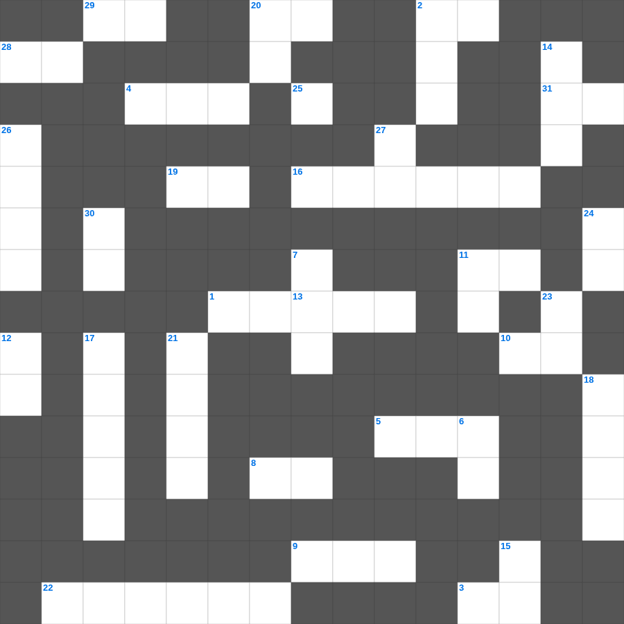

예수님의 열두 제자 (2)
📌 서비스 정의
십자가로세로는 교회 주보와 주일학교에서 사용할 수 있는 성경 기반 가로세로 퍼즐 서비스입니다. 성경 인물, 사건, 핵심 구절을 바탕으로 제작되었습니다. 온라인 풀이 및 인쇄 기능을 제공합니다.
오늘은 예수님의의 주요 내용을 담은 예수님의 성경공부 자료를 준비했습니다. 총 35개의 힌트가 있으며, 주일학교 교재나 성경공부 자료로 활용하기 좋습니다. 무료로 즐기는 예수님의 가로세로 퍼즐을 지금 바로 풀어보세요!

📝 가로 힌트
1. 노아가 보낸 비둘기가 물고 온 잎
1. 비둘기가 물고 온 평화의 상징 잎사귀
2. 수고하고 무거운 짐진 자들아 다 내게로 이것
3. 단련하신 후에는 내가 이것 같이 나오리라
4. 예수님의 옷자락을 만져 나은 병
5. 성경의 맨 처음 책
8. 진리의 이것 띠
9. 언어가 혼잡해져 사람들이 흩어지게 된 탑
10. 새 예루살렘 성곽의 첫 번째 기초석
11. 영들 분별함과 각종 이것 말함
16. 도끼가 물 위에 떠오른 기적
19. 불뱀에 물린 자들이 이것을 보면 살았다
20. 안식일을 기억하여 이것하게 지키라
22. 광야의 외치는 자의 음식
25. 야곱이 베개로 삼았던 것
28. 여호와 이것: 치료하시는 하나님
29. 기드온의 양털 시험
31. 하나님을 믿고 죄를 씻어 영생을 얻는 일
📝 세로 힌트
2. 맥추절 혹은 칠칠절이라 불리는 신약의 절기
6. 열 처녀 비유에서 준비해야 했던 것
7. 물고기 배 속에서 회개한 선지자
11. 믿음의 이것으로 악한 자의 화전을 소멸함
12. 일곱째 날에 하나님이 하신 일
13. 예수님이 예루살렘 입성 때 타신 것
14. 아론의 지팡이에서 핀 꽃
15. 동방 박사들이 드린 세 가지 예물 중 하나
17. 열 가지 재앙 중 마지막 재앙
18. 빌라도가 군중의 요구에 예수님을 넘겨주고 한 행동
20. 평강의 하나님이 친히 너희를 온전히 이것하게 하시고
21. 빌립이 전도한 제자
23. 요셉이 보디발의 아내 유혹을 물리치고 간 곳
24. 곳곳에 기근과 이것이 있으리니
26. 인류 최초의 옷은 무슨 잎으로 만들었나?
27. 멜리데 섬에서 바울을 문 동물
30. 잘못을 뉘우치고 하나님께 돌아오는 것
🧑🏫 교회 교육 자료 활용
이 퍼즐은 주일학교 교재 추천 자료로 활용할 수 있고, 주일학교 주보에 넣기 좋은 분량으로 구성되어 있습니다. 수업용 주일학교 교안에 활동지로 붙이거나, 예배 후 복습용 주일학교 공과교재로 바로 사용할 수 있습니다.
🏷️ 키워드
예수님의 성경공부 자료, 예수님의, 십자가로세로, 성경퀴즈, 말씀퀴즈, 가로세로퍼즐, 주일학교 교재 추천, 주일학교 주보, 주일학교 교안, 주일학교 공과교재